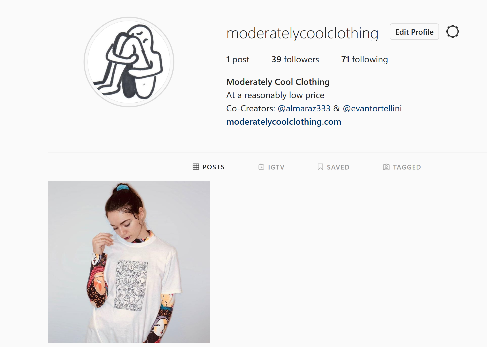
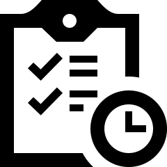
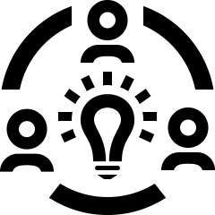

Home
Home Contact
Contact
Professional eCommerce Site
A professional online clothing store to sell the client's artwork.
Project Overview
Challenge:
There is a fine line between suggesting the user do something while maintaining a good experience and manipulating the user by restricting their choices. It was important to design this site to meet the client's expectations while also keeping the user in mind.
Team:
Myself
The Process
What is the Goal?
To design a user-friendly, accessible platform for the client to sell their products. The art used on the products was very personal to the client so it was very important that they be able to showcase it to the user. Creating an eCommerce site is tricky. There are so many out there
Necessities:
- Express the ethos of the brand
- Sleek, minimalist design
- Focus on the art
- Accessible
- Easily navigable IA
- Simple UI
- Show off creativity of artist
Social Media
The only content the client had at the time were the physical products so I contacted local models and set up a photo shoot for their products. This is when my role expanded from a UX designer to more of a projects manager role while also fulfilling the needs of UX Design. After creating content for the site I edited the photos using Adobe Photoshop and optimize them for social media and the site. When the content was ready to be delivered I met with the artist and we discussed possible captions for the pictures. This was important because they would be the user's first impression of the brand. This would be the way they created a bond with the user.
Managing the Project
As this project developed it became clear that my role was not only a UX designer but also a project manager. I was the only other person on the team besides the artist so everything besides creating the designs was my responsibility. This was a great chance to expand my skills as a leader and put together a project from scratch. The biggest challenge I faced was gathering/creating the resources that would be needed for this project to be a success. This was something I had never done before and I was excited to dive in head first. Through reading documentation and experimenting I was able to work with the tools that were provided and in the end deliver a site that the client was happy with.
What I Learned
-

- Managing a project requires a great amount of attention. To be successful you must be able to prioritize while keeping in mind deadlines. Being able to focus on multiple things and keep them on track is a huge factor in a projects outcome.
- Delegating tasks is just as important as being able to prioritize. When a project requires multiple tasks to be done at the same time there might not be enough time or resources for one person to complete it themselves. This is why delegating is important. It can save a project and while creating this site it was essential that I delegate tasks so the deadline was met.
- Being able to prioritize and delegate is important but to be an effective leader you must know how to communicate with people. This is more than listening and responding to them, it's a more active skill that requires you to understand a person and empathize with their needs. When you are able to understand their needs you are able to be a better leader.

Deliverables
The final deliverable was a professional eCommerce site for the client to display their art and monetize it.
Professional eCommerce Site
(Site Currently Paused)
Site Design and Build by Colton Almaraz